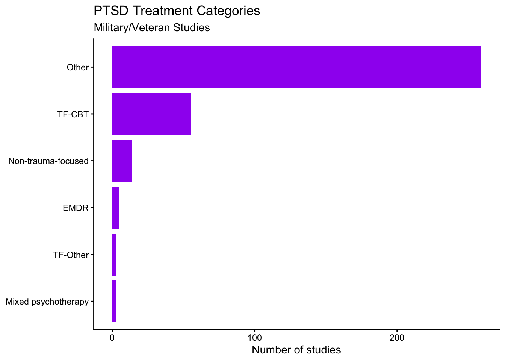

The goal of this portfolio piece is to pratice data cleaning, filtering, and visualization in R using a real-world clinical research dataset. I am using data from the PTSD Repository, created by the National Center for PTSD to summarize what is currently known about PTSD treatment. The dataset includes 583 studies. For this project, I focus on studies involving active duty service members and veterans, and I explore how PTSD-focused psychotherapy treatments are distributed across broader treatment categories (e.g., TF-CBT, EMDR). This is a work in progress: I’m using it to iteratively improve my code, learn how to create clearer plots, and develop a repeatable workflow for categorizing messy treatment labels.
First, I read in the dataset from the PTSD Repository.
PTSD <- read_csv("data/PTSD.csv", show_col_types = FALSE)Next, I filter the dataset to include only studies where participants are active duty military or veterans, and where the treatment focus at the study level is PTSD. I store this filtered data in a new data frame.
PTSD_military <- PTSD %>%
filter(
`Military Status (Study level)` %in% c("Military", "Veteran"),
`Treatment Focus (Study level)` == "PTSD"
)Now, I organize standardized psychotherapy treatments into five broader groups so that they are easier to compare. The five groups are EMDR, TF-CBT, TF-Other, Non-trauma-focused, and Mixed psychotherapy. I based these grouping on a resource provided on the same database as the dataset: Psychotherapy Progressively Specific Grouping table. - EMDR = Eye Movement Desensitization and Reprocessing - TF-CBT = trauma-focused cognitive behavioral therapy (including exposure and cognitive therapies) - TF-Other = trauma-focused therapies that are not TF-CBT (e.g., RTM, trauma counseling) - Non-trauma-focused = CBT without trauma focus and other non-trauma-focused approaches - Mixed psychotherapy = combinations of multiple psychotherapy approaches (e.g., CBT + EMDR)
Not all standardized treatment names in the dataset appear in the grouping list I used. Any treatments that do not match one of the five groups are labeled as Other. To do this, I create a new variable called category with six levels: EMDR, TF-CBT, TF-Other, Non-trauma-focused, Mixed psychotherapy, and Other.
PTSD_military <- PTSD_military %>%
mutate(
category = case_when(
`Standardized Treatment Name` == "Eye Movement Desensitization and Reprocessing (EMDR)" ~ "EMDR",
`Standardized Treatment Name` %in% c(
"Prolonged Exposure (PE)", "Narrative Exposure Therapy (NET)", "Exposure therapy",
"Imaginal exposure", "Imaginal exposure (experimental paradigm) + placebo",
"Imaginal exposure + imagery rescripting", "Implosive Therapy",
"Virtual reality exposure therapy (VRET)", "Written Exposure Therapy (WET)",
"Written narrative exposure", "Imagery Rehearsal Training (IRT)",
"Cognitive Behavioral Conjoint Therapy (CBCT)", "Impact of Killing (IOK)",
"Trauma-focused cognitive behavioral therapy (TF-CBT)",
"Cognitive Processing Therapy (CPT)", "Cognitive Therapy for PTSD (CT-PTSD)"
) ~ "TF-CBT",
`Standardized Treatment Name` %in% c(
"Brief Eclectic Psychotherapy (BEP)", "Modified Lifespan Integration",
"Multimodular motion-assisted memory desensitization and reconsolidation (3MDR)",
"Observed and Experiential Integration - Switching component",
"Reconsolidation of Traumatic Memories (RTM)", "Trauma counseling",
"Accelerated Resolution Therapy (ART)"
) ~ "TF-Other",
`Standardized Treatment Name` %in% c(
"Behavioral activation (BA)",
"Cognitive behavioral therapy (CBT) without a trauma focus",
"Cognitive Behavioral Therapy for Insomnia (CBT-I)",
"Cognitive restructuring and imagery modification", "Metacognitive Therapy",
"Stress Inoculation Training (SIT)", "Affect management therapy",
"Coping skills treatment", "Interpersonal Psychotherapy (IPT)",
"Memory specificity training", "Non-trauma-focused counseling",
"Present Centered Therapy (PCT)", "Psychodynamic psychotherapy",
"PTSD psychotherapy", "Resilience-oriented treatment",
"Skills Training in Affect and Interpersonal Regulation (STAIR)",
"Supportive counseling", "Dialectical Behavior Therapy"
) ~ "Non-trauma-focused",
`Standardized Treatment Name` %in% c(
"Cognitive behavioral therapy (CBT) + Eye Desensitization and Reprocessing (EMDR)",
"Cognitive Behavioral Therapy for Insomnia (CBT-I) + Imagery Rehearsal Training (IRT)",
"Dialectical Behavior Therapy (DBT) + trauma-focused cognitive behavioral therapy (TF-CBT)",
"Eye Movement Desensitization and Reprocessing (EMDR) + cognitive behavioral therapy (CBT) without a trauma focus",
"Eye Movement Desensitization and Reprocessing (EMDR) + progressive muscle relaxation (PMR) + group psychoeducation",
"Narrative Exposure Therapy (NET) + Interpersonal Psychotherapy (IPT)",
"Prolonged Exposure (PE) + Stress Inoculation Training (SIT)",
"Skills Training in Affect and Interpersonal Regulation (STAIR) plus modified Prolonged Exposure (PE)"
) ~ "Mixed psychotherapy",
.default = "Other"
)
)To visualize how frequently each category appears in the filtered dataset, I plot the number of studies per category.
PTSD_military %>%
count(category) %>%
ggplot(aes(x = reorder(category, n), y = n)) +
geom_col(fill = "purple") +
coord_flip() +
labs(
x = NULL,
y = "Number of studies",
title = "PTSD Treatment Categories",
subtitle = "Military/Veteran Studies"
) +
theme_classic()
After viewing the plot, a large portion of treatments fall into Other, which suggests that many treatment labels in this dataset do not match my initial grouping list. As a next step, I inspect which treatment names appear most often in the Other category and decide whether they should be reclassified into one of the five main psychotherapy categories.
PTSD_military %>%
filter(category == "Other") %>%
count(`Treatment Name`, sort = TRUE)## # A tibble: 168 × 2
## `Treatment Name` n
## <chr> <int>
## 1 Placebo 22
## 2 Waitlist 17
## 3 TAU 13
## 4 PCT 7
## 5 Placebo augmentation 6
## 6 Group PCT 5
## 7 MBSR 4
## 8 Control 3
## 9 Prazosin 3
## 10 Sertraline 3
## # ℹ 158 more rowsGiven this output, several “Other” treatment names appear multiple times (e.g., placebo, waitlist, TAU, PCT, and several medication or control conditions). I will have to do futher research to find out where these treatments belong.
Next, I plan to recode common “Other” treatments into the existing categories when appropriate, separate psychotherapy vs medication/control conditions, and explore whether category frequencies differ by study characteristics (e.g., population type, setting, or study design).